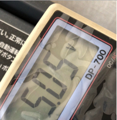
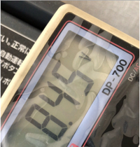
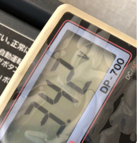
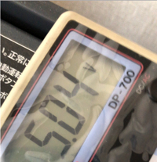
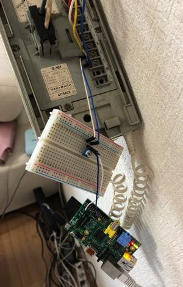
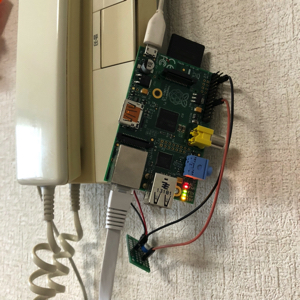

RapberryPiで普通のインターホンから通知を送れるようにしてみた
動機
- 自宅作業が多いので、だいたい家にいる
- 家のインターホンは一箇所しかならず、仕事部屋にいると聞こえない事が多い
- Amazonのお届け物が多いのでちょこちょこくるんでが、いるのに再配達は申し訳ない
- 家のどこにいても、人がきたことを検知したい
対応方法検討
- 賃貸なので、スマホ対応のインターホンなどに交換するのはハードルが高い、値段も高い
- やろうやろうと思ってた電子工作の良い題材なのでは？
- インターホンごと作ってしまうのもありだが、既存のものをお手軽にハックする方が好き
- インターホンの型番をしらべてみると仕様書を発見
- 子機を拡張するための端子がある
- これをラズパイに入力してあげれば、お手軽にいけるのでは？
インターホン調査
- 東京にくるときに親父にもらった年季の入ったテスターを使う時が来た
- 通常時は5Vで、インターホンをならすと+-3Vくらい電圧の変化があった。正弦波的な動きかな。
   
- これを検知してやれば何とかなるかもしれない
ラズパイにどう検知させるか調査
- ラズパイの電子工作本でお勉強。この本はとてもわかりやすい。
- カラー図解 最新 Raspberry Piで学ぶ電子工作 作って動かしてしくみがわかる (ブルーバックス)
- プログラミングによるLEDの点滅
- 定番のLチカでGPIOの出力を覚える
- タクトスイッチによる入力
- GPIOからの入力を覚える
- LOWは0V
- HIGHは3.3V
- 電圧は3.3Vに抑えておいたほうが良さそう
-
AD変換によるアナログ値の利用- 半固定抵抗というやつが出てくる
- 抵抗値の比率を変えられる便利なやつ
- これで電圧を下げてあげればやりたいことができそう
- できればオフセットできるといいけど、そこまではよくわからない
- 半固定抵抗でMAXの電圧を下げて検知させてみる
- プログラミングによるLEDの点滅
テスト実装
- ブレッドボードで実装してみる
- 半固定抵抗を使用して、通常時電圧を2Vちょっとに調整
- テスターを使用して、動作時に3.3V程度になることを確認
- プログラムを通じて、LOWとHIGHが想定通りに取れることを確認
- (回路図を書く)
- こんな感じ

実装
- ブレッドボードのままだと、かさばるので基盤に半田付けする
- インターホンからの配線、基盤、ラズパイと電源、LANを接続する
- プログラムの最終仕上げ(とりあえず実装なので細かいことは気にしない)
import requests
import RPi.GPIO as GPIO
from time import sleep
def send_chatwork(message):
api_url = 'https://api.chatwork.com/v2'
room_id = 'XXXXXXXXX'
api_key = 'YYYYYYYYYYYYYYYYYYYY'
post_message_url = '{}/rooms/{}/messages'.format(api_url, room_id)
headers = {'X-ChatWorkToken': api_key}
params = {'body': message}
r = requests.post(post_message_url, headers=headers, params=params)
GPIO.setmode(GPIO.BCM)
GPIO.setup(24, GPIO.IN, pull_up_down=GPIO.PUD_DOWN)
try:
while True:
if GPIO.input(24) == GPIO.HIGH:
send_chatwork("[To:ZZZZZZ] ピンポーン！")
sleep(10)
sleep(0.01)
except KeyboardInterrupt:
pass
GPIO.cleanup()
- こんな感じ

課題
- たいした処理してないので、zero化したい
失敗談
- 最初は電圧が上がるエッジを検出する機能を使っていた（カッコいいので）
- ちょっとの電圧変化も検知するようで、電気のスイッチを入れた時などに干渉してしまい、その都度、無関係な通知が送られるようになってしまった
- エッジ検出はやめて、普通に常にLOW or HIGHを監視するように変更した
追記：デーモン化してみた
SystemdでPythonコードをデーモン化 - DreamerDreamのブログを参考にデーモン化してみた。
意外と簡単。
- 下記ファイルを作成
/usr/lib/systemd/system/intercom.service
[Unit]
Description=intercom daemon
[Service]
ExecStart=/home/pi/intercom.py
Restart=always
Type=simple
[Install]
WantedBy=multi-user.target
- 設定
# 上記の設定をロードさせる
sudo systemctl daemon-reload
# スタート
sudo systemctl start intercomd
# ステータス確認
systemctl status intercomd
# 自動実行の設定
sudo systemctl enable intercomd
- ラズパイを再起動させて、起動するかテスト